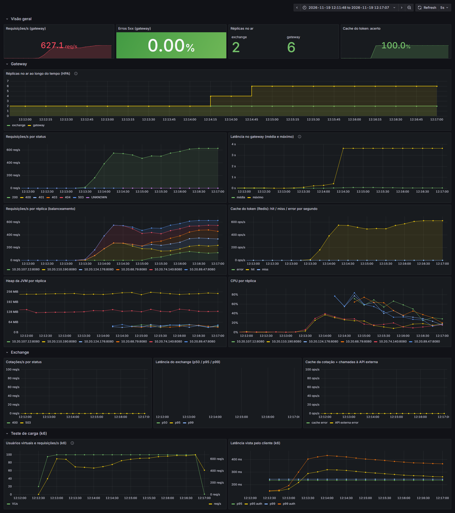

Projeto
Uma plataforma de microsserviços para uma loja: o usuário se cadastra, faz login e consulta câmbio entre moedas. Todas as requisições entram por um único ponto (o gateway, atrás de um balanceador Nginx), que valida o token JWT e repassa a identidade do usuário para os serviços. Roda com Docker Compose na máquina e no EKS (Kubernetes da AWS), com deploy pelo GitHub Actions.
flowchart LR
internet([Internet]) ==> lb["lb · Nginx"]
subgraph trusted [Camada confiável]
lb ==> gw["gateway<br/>(réplicas)"]
gw --> auth
gw --> account
gw --> exchange
gw <-->|token → id| redis[(Redis)]
auth --> account
account --> db[(PostgreSQL)]
account -.->|evento| kafka[[Kafka]] -.-> notification
prom[(Prometheus)] -.->|raspa| gw
prom -.->|raspa| exchange
end
exchange --> api3([API de câmbio])| Integrante | Responsabilidades |
|---|---|
| Leonardo | Gateway, CI/CD, balanceamento de carga, cache (Redis), varredura de vulnerabilidades, documentação |
| Nicolas | Auth, Account, AWS, EKS, mensageria (Kafka), autorização (RBAC) |
| Gabriel (eu) | Exchange, testes de carga, observabilidade, PaaS/custos/SLA |
Arquitetura completa: Arquitetura.
Exchange
Repositório: pna26/exchange-service · Página do grupo: Exchange
Microsserviço de câmbio em Python (FastAPI). Recebe um par de moedas, busca a cotação na AwesomeAPI e devolve o preço de compra e de venda para o usuário logado.
curl -H "Cookie: __store_jwt_token=$TOKEN" localhost:8080/exchange/USD/BRL
# { "sell": 5.3942, "buy": 5.3912, "date": "2026-11-05 10:00:00", "id-account": "8f1c..." }
| Status | Quando |
|---|---|
| 200 | cotação (do cache ou da API externa) |
| 400 | moeda que não tem 3 letras (/exchange/US/BRL) |
| 401 | sem id-account: a requisição não passou pelo gateway |
| 404 | par que a API externa não conhece |
| 503 | API externa fora do ar e sem cotação recente em cache |
Decisões principais:
- FastAPI +
httpxassíncrono: o serviço é quase só espera pela API externa; enquanto espera, o processo atende outras requisições. ask→sellebid→buy: o preço de venda da casa de câmbio é o maior, por issosell ≥ buy.- Cache da cotação por 30 s: o bottleneck deste serviço (Meus bottlenecks).
- 1 processo
uvicornpor container: as métricas doprometheus_clientficam na memória do processo; com vários workers, cada coleta do Prometheus veria um processo diferente. O serviço escala com réplicas (2 no k8s). - Mesmo padrão de segurança dos outros serviços: imagem
python:3.12-slim, usuário 1001, sistema de arquivos somente leitura no k8s;/metricsfica fora de/exchange/**, então só a rede interna vê.
Testes: 21 testes com pytest (a API externa é simulada pelo httpx.MockTransport: cache, stampede,
stale-if-error, erros 400/401/404/503, rótulos das métricas), rodando no CI a cada push. Testado também
contra a AwesomeAPI real e de ponta a ponta pelo gateway, no smoke test do grupo.
Testes de carga
Página do grupo: Testes de carga
O teste é um script k6 (load/store.js)
que roda em container, com cenários e perfis combináveis:
| Cenário | O que faz |
|---|---|
auth |
GET /auth/me + GET /accounts/{id}: rota protegida (gateway valida o token no Redis ou no Auth) |
exchange |
GET /exchange/USD/BRL e EUR/BRL: mede o cache da cotação |
login |
POST /auth/login: o caminho caro (hash da senha + emissão do JWT) |
mixed |
80 % leitura autenticada, 15 % câmbio, 5 % login: o uso "real" da loja |
Perfis: smoke, load, stress (dobra a carga a cada 30 s) e spike (pico repentino). Os
thresholds do k6 são o SLO do grupo (erros < 1 %, p95 < 500 ms, p99 < 1,5 s), então uma rodada fora do
SLO termina com erro. O cadastro e o login das contas de teste ficam fora das estatísticas (tag phase),
e as métricas do k6 vão para o Prometheus e aparecem no Grafana junto com as da plataforma.
Bateria no compose (05/11/2026)
./scripts/load-matrix.sh roda 5 experimentos; os principais números:
| Experimento | Resultado |
|---|---|
| Cache do token (Redis) ligado × desligado | p95 de 12 → 7 ms; 99,7 % das validações sem chamar o Auth |
| Cache da cotação ligado × desligado | p95 de 49 → 4 ms (−92 %) |
| 1, 2 e 4 réplicas do gateway, 400 usuários com pausa | ≈ 290 req/s nos três: nessa carga o gateway não é o gargalo |
| Saturação, sem pausa | 4.120 req/s com 1 réplica, mas 0,57 % de erro |
O achado mais importante foi o da saturação: os erros eram todos em GET /auth/me, e o log do Auth
mostrou o mesmo número de java.net.BindException: Cannot assign requested address. O Auth chama o
Account pelo Feign sem pool de conexões: cada requisição abre uma conexão TCP nova e, a ≈ 4.000 req/s,
as portas do container acabam. A correção (cliente HTTP com pool, feign-hc5) ficou documentada para o
Auth. Limitação honesta: tudo rodou na mesma máquina, então os números mostram tendências e gargalos,
não a capacidade do EKS.
Teste com HPA
O curso pede um vídeo do teste de carga com o HPA (Horizontal Pod Autoscaler) escalando. Escrevi o
roteiro dos três terminais (HPA, pods do gateway, k6) e um gravador
(scripts/hpa-record.py)
que roda os três comandos e grava as saídas lado a lado sem depender de janela aberta.
Em 12/11 o teste foi ensaiado num cluster kind (Kubernetes dentro do Docker) montado igual ao
eks-store (scripts/kind-up.sh):
Kubernetes 1.37, 2 nós com o alocável de um t3.medium, metrics-server e os mesmos manifestos do
EKS. 100 usuários por 4 min no cenário auth:
| Requisições | req/s | p95 | p99 | Erros | Réplicas do gateway |
|---|---|---|---|---|---|
| 435.094 | 1.606 | 148 ms | 196 ms | 0 % | 2 → 6 em ≈ 1 min; de volta a 2 ≈ 5,5 min depois da carga |
Vídeo 8× mais rápido; o relógio no canto superior direito mostra o tempo real. Resultado completo e linha do tempo: Ensaio local.
O ensaio achou dois problemas que valem para o EKS:
- As réplicas novas levavam ≈ 1,5 min para receber carga. O Nginx reaproveita conexões com o
Service do gateway, e o Service do Kubernetes balanceia conexões, não requisições. Com
keepalive_time 10sno Nginx, a divisão caiu para ≈ 35–40 s; o Leonardo aplicou nolb(#10). - O Auth foi morto por falta de memória na segunda rodada pesada seguida:
-XX:MaxRAMPercentage=75com limite de 512 Mi deixa só 128 Mi para o resto da JVM. Até a correção, o roteiro manda reiniciar Auth e Account entre uma tomada e outra.
Rodada no EKS
Em 19/11, com o cluster no ar, o teste rodou duas vezes contra o ELB, com o k6 no Brasil, cenário
auth sem pausa, 4 min:
| Rodada | Usuários | Requisições | req/s | p95 | p99 | Erros | Réplicas do gateway |
|---|---|---|---|---|---|---|---|
| com HPA (gravada) | 100 | 149.160 | 533 | 254 ms | 356 ms | 0 % | 2 → 6 |
| sem HPA | 200 | 230.602 | 819 | 370 ms | 630 ms | 0 % | 2 (fixo) |
A rodada com HPA foi gravada com o meu hpa-record.py por quem tinha kubectl no cluster (a minha
conta da AWS não é a do grupo); a sem HPA eu rodei da minha máquina, só com o k6. Com o HPA, o gateway
foi para 4 réplicas aos 35 s de carga e para 6 aos 52 s, as 6 prontas em ≈ 1,5 min, 3 em cada nó e
nenhuma sem espaço, como a conta de capacidade previa. A volta para 2 veio ≈ 5,5 min depois do fim da
carga.
Vídeo 8× mais rápido no EKS; o relógio no canto mostra o tempo real. Grafana do cluster durante o teste:

As duas rodadas ficaram dentro do SLO. Quase toda a latência é rede: com 1 usuário cada requisição já
levava ≈ 180 ms (ida e volta do Brasil até us-east-2). Detalhes em
Resultado no EKS.
Observabilidade
Página do grupo: Observabilidade
Prometheus e Grafana no compose e no EKS, com o dashboard versionado em JSON. É um dos meus bottlenecks: detalhes em Meus bottlenecks.
PaaS, custos e SLA
Página do grupo: PaaS, custos e SLA
Custo do que entregamos no EKS (us-east-2, preços conferidos em 05/11/2026): ≈ US$ 0,29 por
hora, ≈ US$ 214 por mês ligado direto. Os itens maiores são fixos: control plane do EKS (US$ 73/mês),
2 nós t3.medium (US$ 61) e o NAT gateway (US$ 33, o item "escondido" mais caro). Com o budget de
US$ 20/mês, são ≈ 70 horas de cluster ligado, por isso a regra do grupo é subir só para testar e apagar
no fim.
Armadilha: suporte estendido do EKS
Os US$ 0,10/h do control plane só valem enquanto a versão do Kubernetes está no suporte padrão. Depois, o cluster entra sozinho no suporte estendido: US$ 0,60/h, seis vezes mais.
PaaS: os mesmos containers no ECS Fargate custariam ≈ US$ 105/mês, no App Runner ≈ 120 e no Render/Railway ≈ 60–150. Para esta plataforma (pequena, carga baixa), uma PaaS ou o Fargate sairia mais barato e com menos operação; o EKS compensa quando muitos serviços dividem os mesmos nós ou quando se precisa de recursos do Kubernetes, como o HPA.
SLA e SLO: multiplicando o SLA de cada peça da AWS que usamos (EKS, ELB, nós em 2 zonas e o RDS single-AZ), a disponibilidade composta fica em ≈ 99,44 % ao mês; com o RDS Multi-AZ, ≈ 99,89 %. Por isso o SLO do grupo é 99,5 % de requisições sem erro 5xx no gateway (≈ 3 h 39 min de orçamento de erro por mês), medido no Prometheus; para chegar a 99,9 %, o primeiro passo seria o RDS Multi-AZ.